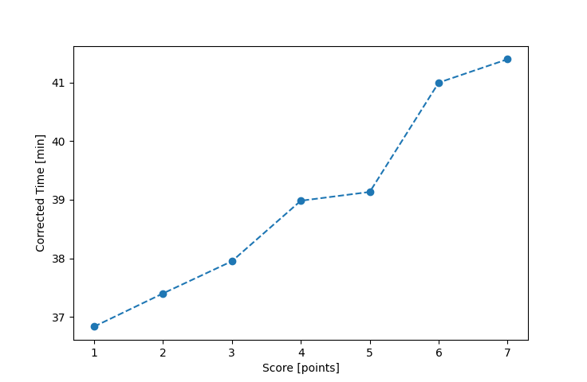

| Wind: | 2-3 (BFT) |
|---|---|
| RC: | Rod_HKen_B |
| Date: | May 01, 2016 |
| Notes: | M2 270 |
| Rank / Score | Name | Boat | Input Time [mm:ss] | Input Offset [mm:ss] | Race Time [mm:ss] | Race Time [s] | Handicap | Corrected Time [s] | Corrected Time [mm:ss] |
|---|---|---|---|---|---|---|---|---|---|
| 1.0 | Art_M | SWSX | 35:19 | 00:00 | 35:19 | 2119 | 0.95900 | 2210 | 36:50 |
| 2.0 | Mike_F | SF | 37:33 | 00:00 | 37:33 | 2253 | 1.00400 | 2244 | 37:24 |
| 3.0 | Bill_P | SF | 38:06 | 00:00 | 38:06 | 2286 | 1.00400 | 2277 | 37:57 |
| 4.0 | Nedra_F | SF | 39:08 | 00:00 | 39:08 | 2348 | 1.00400 | 2339 | 38:59 |
| 5.0 | Ron_F | F5 | 37:48 | 00:00 | 37:48 | 2268 | 0.96600 | 2348 | 39:08 |
| 6.0 | Michael_L | BNSH | 38:45 | 00:00 | 38:45 | 2325 | 0.94500 | 2460 | 41:00 |
| 7.0 | Pat_B | WF | 37:58 | 00:00 | 37:58 | 2278 | 0.91700 | 2484 | 41:24 |
| 8.0 | Lewis_V | BCN | DNF | -- | -- | -- | -- | -- | DNF |

Application Notes:
All race results are unofficial
View source code at https://github.com/cessnao3/portsmouthracecalc/